컴퓨터응용가공산업기사 (2009-03-01 기출문제)
1과목: 기계가공법 및 안전관리
1. 연삭 숫돌의 3요소가 아닌 것은?
- 입자
- 결합제
- 입도
- 기공
(정답률: 67%)

2. 미소분말을 초고온(2000℃), 초고압(5만 기압 이상)에서 소결하여 만든 인공합성 절삭공구 재료로 뛰어난 내열성과 내마모성으로 인하여 난삭재료, 담금질강, 고속도강, 내열강 등의 절삭에 많이 사용되고 있는 것은?
- CBN 공구
- 다이아몬드 공구
- 서멧 공구
- 세라믹 공구
(정답률: 46%)
3. 선반에서 지름 102mm인 환봉을 300rpm 으로 가공할 때 절삭 저항력이 100kgt이었다. 이 때 선반의 절삭효율을 75%라 하면 절삭 동력은 약 몇 kw인가?
- 1.4
- 2.1
- 3.6
- 5.4
(정답률: 50%)
4. 공작물을 화학반응을 통하여 가공하는 화학적 가공의 특징으로 틀린 것은?
- 강도나 경도에 관계없이 사용할 수 있다.
- 가공경화 또는 표면변질 층이 생긴다.
- 복잡한 형상과 관계없이 표면 전체를 한번에 가공할 수 있다.
- 한번에 여러 개를 가공할 수 있다.
(정답률: 48%)
5. 드릴 머신으로 얇은 철판에 구멍을 뚫을 때, 공작물 보조 받침대로 가장 좋은 것은 무엇인가?
- 구리판
- 강철판
- 나무판
- 니켈판
(정답률: 81%)
6. 선반의 주축을 중공축으로 한 이유에 속하지 않는 것은?
- 무게를 감소하여 베어링에 작용하는 하중을 줄이기 위하여
- 긴 가공물 고정이 편리하게 하기 위하여
- 지름이 큰 재료의 테이퍼를 깍기 위하여
- 굽힘과 비틀림 응력의 강화를 위하여
(정답률: 56%)
7. 절삭유제에 대한 설명 중 옳은 것은?
- 마찰계수가 높고 표면장력이 커야 한다.
- 공구의 인선을 냉각시켜 공구의 경도 저하를 방지한다.
- 식물유는 냉각효과가 우수하므로 고속 다듬질 절삭에 좋다.
- 광(물)유는 윤활작용이 좋고 냉각성이 크다.
(정답률: 49%)
8. CNC 선반(수치제어선반)에 대한 설명이 잘못된 것은?
- 좌표치의 지령방식에는 절대지령과 증분지령이 있고 한 블록에 2가지를 혼합하여 지령할 수 없다.
- 축은 공구대가 전후 좌우의 2방향으로 이동하므로 2축을 사용한다.
- Taper나 원호를 절삭시, 임의의 인선을 반지름을 가지는 공구의 인선 반지름에 의한 가공 경로의 오차를 CNC장치에서 자동으로 보정하는 인선 반지름 보정 기능이 있다.
- 휴지(Dwell)기능은 지정한 시간 동안 이송이 정지되는 기능을 의미한다.
(정답률: 53%)
9. 수평 밀링 머신에 대한 설명이 아닌 것은?
- 주축은 기둥 상부에 수평으로 설치한다.
- 스핀들 헤드는 고정형 및 상하 이동형, 필요한 각도로 경사시킬 수 있는 경사형 등이 있다.
- 주축에 아버를 고정하고 회전시켜 가공물을 절삭한다.
- 공작물은 전후, 좌우, 상하 3방향으로 이동한다.
(정답률: 56%)
10. 길이가 2m인 어떤 물체의 온도가 2℃ 상승하였을 시 온도변화에 따른 길이 변화량은 몇 μm인가? (단, 물체의 열팽창 계수는 11.3×10-6/℃이다.)
- 2.8
- 11.3
- 28
- 45.2
(정답률: 27%)
11. 다이얼 게이지는 어떤 정기에 속하는가?
- 전장 측정기
- 단면 측정기
- 비교 측정기
- 각도 측정기
(정답률: 76%)
12. 공작기계로 가공된 평탄한 면을 더욱 정밀하게 다듬질하는 공구로 공작기계의 베드, 미끄럼면, 측정용 정밀정반 등 최종 마무리 가공에 사용되는 수공구는?
- 리머
- 정
- 다이스
- 스크레이퍼
(정답률: 72%)
13. 브로칭 머신에 사용하는 절삭공구 브로치의 피치 간격을 일정하게 하지 않는 이유는?
- 난삭재 가공
- 떨림 발생 방지
- 가공시간 단축
- 칩 처리용이
(정답률: 64%)
14. 작업장에서 무거운 짐을 들고 운반 작업을 할 때의 설명으로 틀린 것은?
- 짐은 가급적 몸 가까이 가져온다.
- 가능한 상체를 곧게 세우고 등을 반듯이 하여 들어 올린다.
- 짐을 들어올릴 때 충격이 없어야 한다.
- 짐을 무릎을 굽힌 자세에서 들고 편 자세에서 내려 놓는다.
(정답률: 77%)
15. 테이퍼 플러그 게이지(taper plug gage)의 측정에서 그림과 같이 정반위에 놓고 핀을 이용해서 측정하려고 한다. M을 구하는 식은?
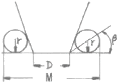
- M=D+2r+2r×cot β
- M=D+r+r×cot β
- M=D+2r+2r×tan β
- M=D+r+r×tan β
(정답률: 44%)
16. 비트리 파이드계 연삭숫돌로 내경 연삭을 할 때 일반적으로 공작물의 원주 속도는 몇 m/min 인가? (단, 이 값은 공작물의 재질 등에 따라 일정하지 않다.)
- 100~300
- 300~600
- 600~800
- 1600~2000
(정답률: 45%)
17. 슬로터를 이용한 가공이 아닌 것은?
- 내경 키 홈(key way)
- 내경 스플라인(spline)
- 세레이션(serration)
- 나사(thread)
(정답률: 72%)
18. 절삭공구를 육각형 모양의 드럼(drum)에 가공 공정 순서대로 장착하고 동일 치수의 제품을 대량생산하고자 한다. 이때 사용하는 공작기계로 가장 적합한 것은?
- 탁상선반
- 정면선반
- 수직선반
- 터릿선반
(정답률: 59%)
19. 선반에서 양센터 작업시 주축의 회전을 공작물에 전달하기 위하여 사용되는 것은?
- 센터 드릴(crnter drill)
- 돌리개(lathe dog)
- 면 판(face plate)
- 방진구(work rest)
(정답률: 62%)
20. 응급 처치시 유의 사항에 위배되는 것은?
- 긴급을 요하는 환자가 2인 이상 발생하였을 경우에는 대출혈, 중독 등의 환자보다 심한 소리와 행동을 나타내는 환자를 우선 처치하여야 한다.
- 충격방지를 위하여 환자의 체온유지에 노력하여야 한다.
- 응급 의료진과 가족에게 연락하고, 주위 사람에게 도움을 청해야 한다.
- 의식불명 환자에게 물 등 기타의 음료수를 먹이지 말아야 한다.
(정답률: 77%)
2과목: 기계설계 및 기계재료
21. 배빗 메탈(babbit metal)의 주요성분으로 옳은 것은?
- Sn-Sb-Cu
- Sn-Sb-Zu
- Sn-Pb-Si
- Sn-Pb-Cu
(정답률: 37%)
22. 다음 중 합금공구감의 KS 분류기호로 옳은 것은?
- STC
- SC
- STS
- GCD
(정답률: 43%)
23. 합금강에서 합금 원소의 함유량이 많아지면 내식성, 내열성 및 자경성을 크게 증가시키며 탄화물을 만들기 쉽고, 내마명성이 커지게 하는 원소는?
- W
- V
- Ni
- Cr
(정답률: 46%)
24. 금반지를 18(K)금으로 만들었다. 순금(Au)은 몇 %가 함유된 것인가?
- 18
- 34
- 75
- 92
(정답률: 64%)
25. 금속의 공통적인 특성을 설명한 것으로 틀린 것은?
- 연성 및 전성이 좋다.
- 금속 고유의 관택을 갖는다.
- 열과 전기의 부도체이다.
- 고체 상태에서 결정구조를 갖는다.
(정답률: 68%)
26. 다음 금속 중 자기 변태점이 없는 것은?
- Fe
- Ni
- Co
- Zn
(정답률: 45%)
27. 다음 중 기계구조용 탄소강 S45C의 탄소함유량으로 가장 적당한 것은?
- 0.02~2.01%
- 0.04~0.⑤%
- 0.32~0.38%
- 0.42~0.48%
(정답률: 62%)
28. Cu-Sn의 평행상태도에서 γ상이 520℃에서 일으키는 변태는 어떤 변태인가?
- 포정변태
- 포석변태
- 공정변태
- 공석변태
(정답률: 29%)
29. 다음 중 조직이 펄라이트와 시멘타이트로 이루진 강은?
- 연강
- 과공석강
- 아공석강
- 공석강
(정답률: 39%)
30. 탄소강은 일반적으로 충격치가 천이온도에 도달하면 급격히 감소되어 취성이 생기는데 이 취성을 무엇이라 하는가?
- 저온취성
- 청열 취성
- 뜨임취성
- 적열취성
(정답률: 27%)
31. 96000 Nㆍcm 토크를 전달하는 지름 50mm인 축에 적합한 묻힘 키(폭×높이=12mm×8mm)의 길이는 약 몇 mm 이상이어야 하나? (단, 키의 전단강도만으로 계산하고, 키의 허용전단응력 τ=8000N/cm2이다.)
- 40mm
- 50mm
- 5mm
- 4mm
(정답률: 28%)
32. 길이가 100mm인 봉이 인장 응력을 받았을 때 변형률이 1이라면 변형 후의 전체 길이는?
- 50mm
- 100mm
- 150mm
- 200mm
(정답률: 32%)
33. 그림에서 기어 A의 잇수 ZA=30, 기어 B의 잇수 ZB=20 이라 할 때 A를 고정하고 암 H를 시계방향(+)으로 2회전 시킬 때 B는 약 몇 회전하는가? (단, 시계방향을 +, 반시계방향을 -로 한다.)
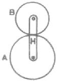
- +1.3
- -3
- -1.3
- +3
(정답률: 36%)
34. 국제단위계(St)에서 기본단위에 해당하지 않는 것은?
- 질량(kg)
- 평면각(rad)
- 전류(A)
- 광도(cd)
(정답률: 35%)
35. 베어링 번호가 No. 6206인 롤링베어링의 안지름은?
- 6mm
- 20mm
- 30mm
- 40mm
(정답률: 67%)
36. 임의 점에서 직선 거리 L만큼 떨어진 곳에서 힘 F가 수직하게 작용할 때 발생하는 모멘트 M을 바르게 나타낸 것은?
- M=F×L
- M=F/L
- M=L/F
- M=F+L
(정답률: 60%)
37. 두 물체 사이의 거리를 일정하게 유지시키면서 결합하는데 사용하는 볼트는?
- 아이 볼트
- 스테이 볼트
- T 볼트
- 리머 볼트
(정답률: 59%)
38. 안전율에 대한 설명으로 틀린 것은?
- 안전율은 항상 1보다 큰 값을 갖는다.
- 재료의 허용응력에 대한 기준강도의 비이다.
- 재료의 허용응력이 기준강도보다 반드시 커야한다.
- 충격하중은 정하중보다 안전율을 크게 한다.
(정답률: 37%)
39. 원통형 커플링(cylindrical coupling)의 종류에 해당하지 않는 것은?
- 플랜지 커플링
- 머프 커플링
- 마찰원통 커플링
- 셀러 커플링
(정답률: 27%)
40. 피치원 지름이 무한대인 기어는?
- 랙(rack)기어
- 헬리컬(helical)기어
- 스퍼(spur)기어
- 나사(screw)기어
(정답률: 49%)
3과목: 컴퓨터응용가공
41. 공간상에 존재하는 2개의 곡면이 서로 교차하는 경우 교차되는 부분에서 모서리(edge)가 발생하는데, 이 모서리를 주어진 반경을 갖고 부드럽게 처리하는 기능을 무엇이라고 하는가?
- intrsecting
- projecting
- blending
- stretching
(정답률: 72%)
42. 다음 식에서 a=d 이면 도형은 어떻게 이동되는가? (단, a, d가 1보다 크다.)
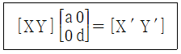
- 원점을 중심으로 확대 변환한다.
- x축을 중심으로 회전한다.
- y축을 중심으로 회전한다.
- 이동하지 않는다
(정답률: 45%)
43. 직육면체를 8개의 정점의 좌표(V1-V8)와 각 정점을 연결하는 모서리들(e1~e1sub>2)에 관한 정보로만 표현하는 모델은?
- solid model
- surface model
- wire-frame model
- system model
(정답률: 49%)
44. CAM에서 포스트 프로세서(Post processor)에 대한 설명으로 가장 적당한 것은?
- 여러 대의 컴퓨터와 터미넣을 상호 연결하기 위해 접속하는 데이터 통신망용 프로그램
- CAM 시스템으로 만들어진 공구 위치 정보를 바탕으로 CNC 공작기계의 제어코드를 산출하는 프로그램
- 설계해석용의 각종 정보를 추출하거나 필요한 형식으로 재구성하는 프로그램
- 주변장치의 제어를 위해 전기적, 논리적으로 중앙처리장치와 연결하는 프로그램
(정답률: 56%)
45. 절점(knots)의 갯수가 9 이고 차수(degree)가 4인 임의의 B-스플라인곡선의 조정점(control point)의 갯수는 몇 개인가?
- 3
- 4
- 5
- 6
(정답률: 45%)
46. 2개의 3차 Bezier 곡선을 연결한 복합 Bezier 곡선을 정의하려면 조정점이 몇 개 필요한가?
- 6
- 7
- 12
- 13
(정답률: 32%)
47. 자료의 데이터 변환(data transformation) 기능이라고 할 수 없는 것은?
- Scale 기능
- Pan 기능
- Translation 기능
- Rotation 기능
(정답률: 58%)
48. 다음 모델링 기법 중 3차원 형상의 물리적 성질(체적, 무게중심, 관성모멘트 등)의 계산이 용이한 것은?
- 솔리드 모델링(solid modeling)
- 와이어프레임 모델링(wire-frame modeling)
- 서피스 모델링(surface modeling)
- 시스템 모델링(system modeling)
(정답률: 64%)
49. 그래픽처리 디스플레이 장치에 의해서 화면을 구성하고자 할 경우 화면을 구성하는 가장 최소 단위는?
- 픽셀(pixel)
- 스캔(scan)
- 레벨(level)
- 음극관(cathode)
(정답률: 72%)
50. 원통 좌표계에서 표시된 점의 위치가 (r, θ, z) 이다. 이 위치를 직교 좌표계로 표현한 것은?
- x=r cosθ, y=r sinθ, z
- x=r sinθ, y=r cosθ, z
- x=r cosθ, y=r secθ, z
- x=r tanθ, y=r cotθ, z
(정답률: 42%)
51. 곡면을 모델링하는 여러 방법들 중에서 평면도, 정면도, 측면도상에 나타난 곡면의 경계곡선들로부터 비례적인 관계를 이용하여 곡면을 모델링(modeling)하는 방법은?
- 점 데이터에 의한 방식
- 쿤스(coons) 방식
- 비례 전개법(proportional development)에 의한 방식
- 스윔(sweep)에 의한 방식
(정답률: 52%)
52. IGES 파일의 구성형식이 아닌 것은?
- Terminate
- Directory Entry Section
- Graphics Section
- Global Section
(정답률: 24%)
53. 주어진 점들을 모두 통과하면서 부드럽게 연결한 곡선은?
- spline
- Bezier curve
- B-spline
- K-spline
(정답률: 58%)
54. DNC(Direct Numerical Control) system의 구성요소가 아닌 것은?
- 컴퓨터
- 통신케이블
- CNC 테이프
- CNC 공작기계
(정답률: 57%)
55. 솔리드 모델링 기법의 일종인 특징 형상 모델링 기법의 성격에 대한 설명으로 맞지 않는 것은?
- 모델링 입력을 설계자 또는 제작자에게 익숙한 형상 단위로 하자는 것이다.
- 전형적인 특징 형상은 모따기(chamfer), 구멍(hole), 슬롯(slot), 포켓(pockt) 등과 같은 것이다.
- 모델링된 입체를 제작하는 단계의 공정계획에서 매우 유용하게 사용될 수 있다.
- 사용 분야와 사용자에 관계없이 특징 형상의 종류가 항상 일정하다는 것이 장점이다.
(정답률: 53%)
56. CAD/CAM의 도입 효과와 거리가 먼 것은?
- 도면 품질 향상
- 설계 생산성 향상 및 설계 변경 용이
- 제품 개발 기간 단축
- 기업 내 업무의 통합적 관리
(정답률: 66%)
57. CAD/CAM SYSTEM 구성에서 입력장치가 아닌 것은?
- 키보드(keyboard)
- 마우스(mouse)
- 스캐너(scanner)
- 플로터(plotter)
(정답률: 71%)
58. 그림과 같이 구에서 원통과 직육면체를 빼냄(subtraction)으로써 원하는 형상을 모델링하였다. 이와 같은 모델링 방법을 무엇이라고 하는가?
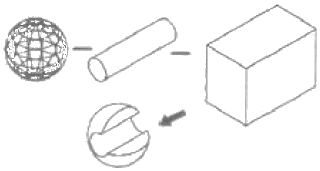
- CSG 방식
- B-rep 방식
- Trust 방식
- NURBS 방식
(정답률: 53%)
59. 벡터 ā=(a1, a2, a3)는 x, y, z축 방향의 변위일 때 벡터의 크기(길이)는?
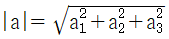
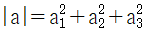
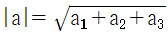
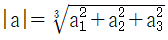
(정답률: 37%)
60. 5축 CNC 가공에 대한 설명으로 틀린 것은?
- 곡면 상의 공구 접촉점이 주어지면 공구의 위가 유일하게 결정된다.
- 공구 원통면을 이용하여 단 한번의 공구경로로 cusp 없이 윤곽가공이 완료될 수 있다.
- 평 엔드밀 사용시 공구의 자세를 잘 조정함으로써 cusp양을 최소화 할 수 있다.
- 공구 중심날이 없는 황삭용 평 엔드밀을 이용한 하향 절삭이 가능하다.
(정답률: 18%)
4과목: 기계제도 및 CNC공작법
61. 제 1각법에 관한 설명 중 올바른 것은?
- 정면도 아래에 저면도가 배치된다.
- 평면도 아래에 저면도가 배치된다.
- 정면도 우측에 좌측면도가 배치된다.
- 정면도 위에 평면도가 배치된다.
(정답률: 48%)
62. 다음 도면에서 센처의 길이 ℓ로 표시된 부분의 길이는? (단, 테이퍼는 1/20이고 단위는 mm 임)
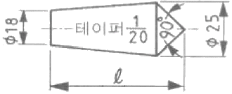
- 82.5
- 140
- 152.5
- 292.5
(정답률: 46%)
63. 다음 도면에서 구멍과 축의 최대 죔새는?
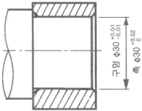
- 0.04
- 0.03
- 0.02
- 0.01
(정답률: 48%)
64. 온 흔들림 기하공차의 기호를 나타낸 것은?
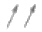
(정답률: 47%)
65. 가공 방법의 약호에 대한 설명 중 옳지 않은 것은?
- L: 선반가공, FF: 줄 다듬질, FB: 브러싱
- GH: 호닝가공, FL: 래핑 다듬질, BR: 브로칭가공
- D: 드릴가공, B: 보링머신가공, G: 주조
- CD: 다이캐스팅, M: 밀링가공, P: 플레이닝가공
(정답률: 27%)
66. KS 기계재료에서 SF 340 A 는 어떤재료를 나타내는가?
- 탄소강 단강품
- 가단주철
- 합금 공구강재
- 니켈-동 합금 주물
(정답률: 46%)
67. 보기와 같은 면의 지시기호에서 λc 0.8은 무엇을 나타내는가?
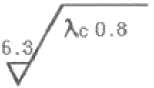
- 컷 오프값
- 최대 높이
- 평균 거칠기
- 기준 길이
(정답률: 62%)
68. 가상선의 용도에 대한 설명으로 틀린 것은?
- 가공전 또는 가공 후의 모양을 나타내는 경우
- 인접부분을 참고로 나타내는 경우
- 도시된 물체의 바로 뒤쪽에 있는 물체를 나타내는 경우
- 가동 부분을 이동 중의 특정한 위치 또는 이동한계의 위치로 표시하는 경우
(정답률: 37%)
69. 제 3각법으로 정투상된 보기와 같은 정면도와 평면도에 맞는 우측면도로 가장 적합한 것은?
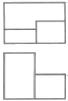
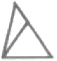
(정답률: 34%)
70. 나사의 도시에서 완전나사부로 맞는 것은?
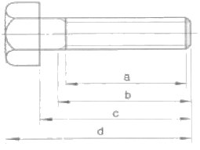
- a
- b
- c
- d
(정답률: 44%)
71. 그림과 같이 최종 제어 대사인 테이블 앞 서보모터에서 속도 검출과 위치 검출을 행하는 서보(servo)기구의 형식은?
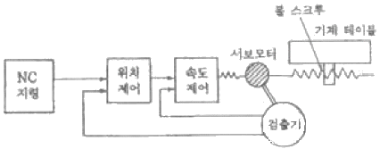
- 개방회로 방식(open loop system)
- 패쇄회로 방식(closed loop system)
- 반폐쇄회로 방식(semi-closed loop system)
- 하이브리드 서보 방식(hybrid servo system)
(정답률: 48%)
72. 머시닝센터의 자동공구 교환장치(ATC)에서 매거진 내의 배열순서와 무관하게 매거진 포트번호 또는 공구번호를 지령하는 것에 의해 임의로 공구를 주축에 격납시키는 방식은?
- 랜덤(random) 방식
- 팰릿(pallet) 방식
- 시퀸스(sequence) 방식
- 터릿(turret) 방식
(정답률: 43%)
73. CNC공작기계의 3가지 제어방식에 해당하지 않는 것은?
- 위치결정 제어
- 속도변환 제어
- 윤곽절삭 제어
- 직선절삭 제어
(정답률: 59%)
74. CNC 공작기계에서 스핀들을 제어하는 보조기능이 아닌 것은?
- MO3
- MO4
- MO5
- MO6
(정답률: 59%)
75. 보조기능 중 MOO과 MO1의 기능 설명으로 옳은 것은?
- 프로그램 정지로 두 개가 똑같은 기능이다.
- 프로그램 정지 지령으로 두 개 모두 조작반의 스위치가 ON일 때 정지한다.
- 프로그램 정지 지령으로 MOO은 무조건 정지하고 MO1은 조작반의 선택적 프로그램 정지 스위치가 ON일 때 정지한다.
- 프로그램 정지 지령으로 MO1은 무조건 정지하고 MOO은 조작반의 선택적 프로그램 정지 스위치가 ON일 때 정지한다.
(정답률: 64%)
76. 다음과 같은 CNC선반 프로그램에서 전개번호 N30에서의 주축 회전수는 몇 rpm 인가? (단, 직경지령 사용)
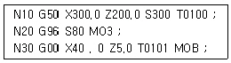
- 300
- 80
- 637
- 96
(정답률: 39%)
77. CNC가공 중 금지영역을 침범했을 때 방생하는 경보(alarm)내용은?
- P/S ALARM
- EMERGENCY L/S ON
- OT ALARM
- TORQUE LIMlT ALARM
(정답률: 38%)
78. CNC선반에서 지령값 X55.0으로 프로그램하여 소재의 외경을 가공한 후 측정한 경과가 ø54.97이었다. 기존의 X축 보정값이 0.004라 하면 보정값을 얼마로 수정해야 하는가? (단, 직경지령 사용)
- 0.0034
- 0.03
- 0.034
- 0.026
(정답률: 55%)
79. CNC방전가공의 특징 설명으로 틀린 것은?
- 가공속도가 매우 느리다.
- 열에 의한 변형이 적으므로 가공정밀도가 우수하다.
- 전기적 부도체인 재료도 가공 할 수 있다.
- 담금질한 재료, 가공경화하기 쉬운 재효도 가공이 용이하다.
(정답률: 63%)
80. CNC선반 작업시 공구가 받는 절삭저항 중 가장 큰 것은?
- 주분력
- 배분력
- 이송분력
- 회전분력
(정답률: 69%)